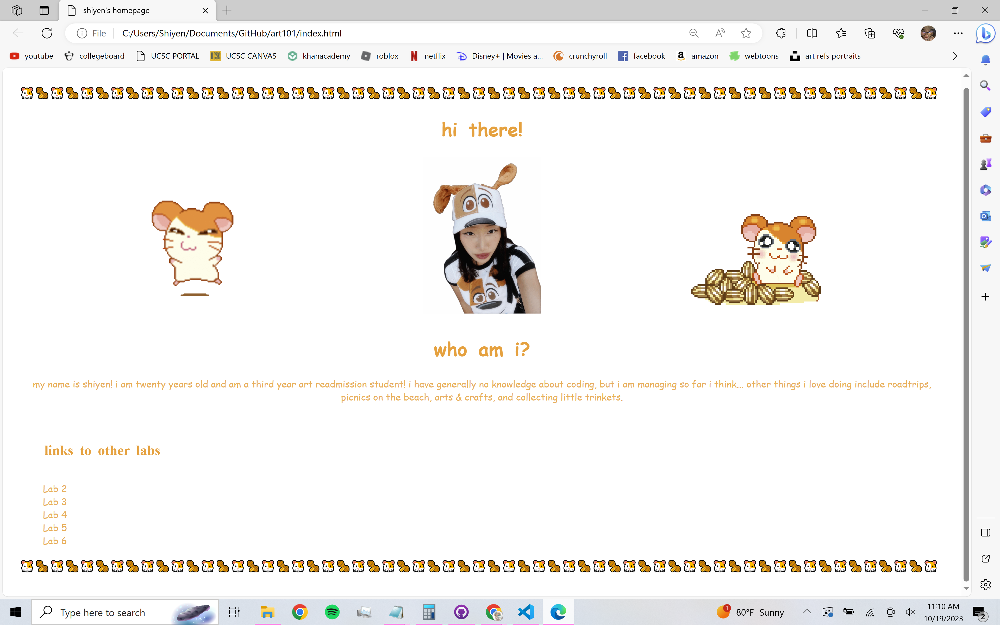

Lab 3: File Structure and Transfer
What is this Lab?
The objective of this lab is to work with a partner to create local file structures on your computer, add index.html files, and upload them to the server.
Difficulties
I think I am starting to understand more of how to structure the content within the HTML because it almost feels like a paper whereas if I place something above, it shows above, and if placed below, it shows below. I feel that if I were to do it from scratch, I could figure it out because it feels like a sandwich, but I would still definitely struggle trying to recreate the order and trying to do more advanced stuff beyond just structuring it.
Results
Here is my screenshot of the file structure.
Screenshots Used in this Lab
Task One
Task Two
Task Three